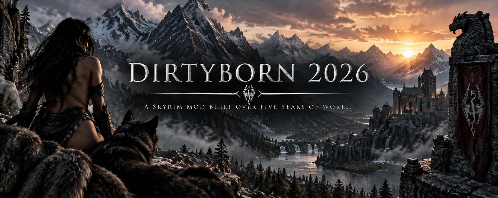

Dirtyborn is a Skyrim mod built over five years of development. It adds quests, voiced dialogue, a unique follower, radiant quests, stories, urban legends, and many other features to the game.
Dirtyborn allows you to play through the mod with whatever sexual preference you choose.
Dirtyborn contains adult explicit content, but that does not define what the mod is. The mod includes over 30 quests and adds a unique follower, Galesse Barkwing, with multiple features.
The voices have been upgraded using ElevenLabs Version 3.
New lore stories and urban legend stories have been added to the scene generator with Galesse.
New radiant quests are available, including House Guests and One-Night Stand.
Galesse Barkwing has multiple features and interactions throughout Dirtyborn.
Dirtyborn contains more than 30 quests along with the original content developed over the last five years.
This version of Dirtyborn is for the Legendary Edition version of Skyrim.
If you are using SSE or AE, you will need to upgrade the mod yourself using the available tools from Nexus to upgrade Dirtyborn to the version of Skyrim you are playing.
The reason Dirtyborn is released for Legendary Edition is because the other versions of Skyrim continue to receive updates. Releasing it this way allows players to upgrade Dirtyborn to the version they use, including after Skyrim receives another update.